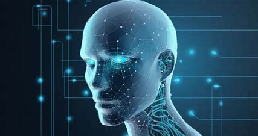
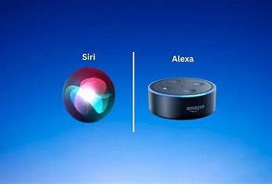

Key Concepts in AI



In relation to artificial intelligence,
the following key concepts can be distinguished:
<ol>
    <li>Machine Learning (ML): A subset of AI
        that allows systems to learn from data and improve
        over time without being explicitly programmed.
        Examples include recommendation systems (like
        Netflix or YouTube) and fraud detection.</li>

    <li>Natural Language Processing (NLP): A branch of AI
        focused on enabling machines to understand, interpret,
        and generate human language. Applications include voice
        assistants like Siri or Alexa, chatbots, and language
        translation systems.</li>
    
    <li>Computer Vision: Enables machines to interpret
        and make decisions based on visual data from the world,
        such as images and videos. It's widely used in facial
        recognition, self-driving cars, and medical imaging.</li>

    <li>Robotics: AI powers robots, giving them the ability
        to perform tasks autonomously, often in environments
        that are too dangerous or complex for humans.</li>

    <li>Expert Systems: AI-based systems designed to mimic
        human expertise in specific domains, such as medical
        diagnosis or financial decision-making.</li>
</ol>